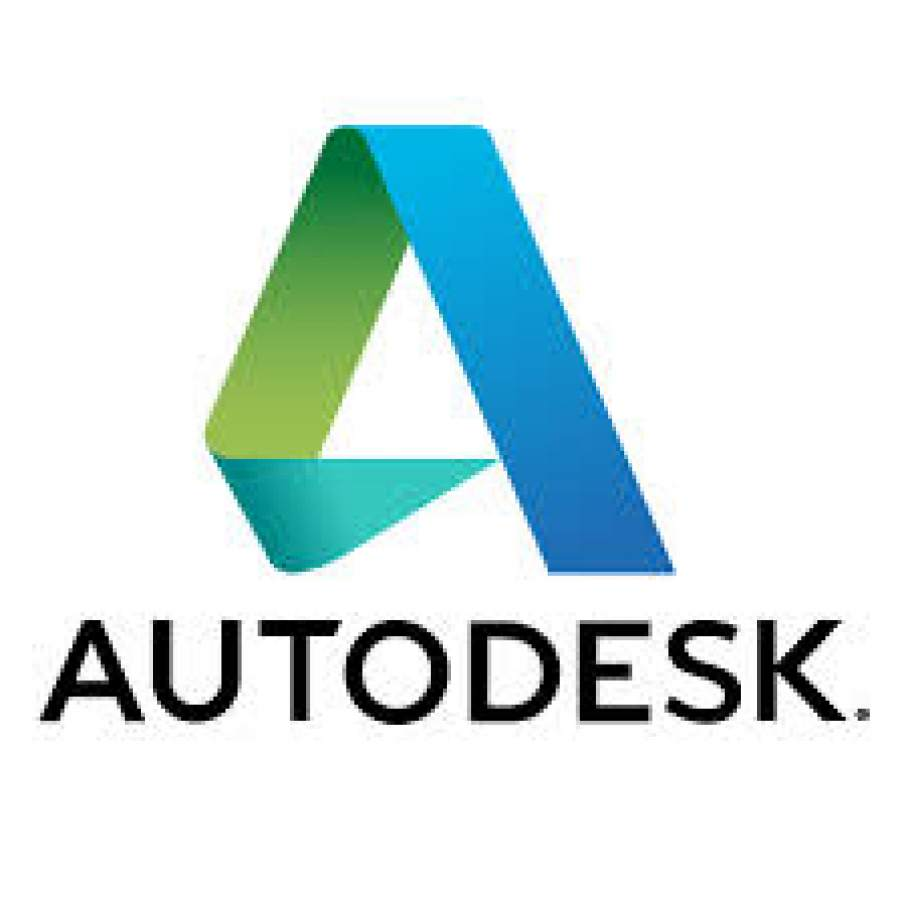

Work Experience
Over the past few years I have gotten the chance to get some real work experience through various job opportunites.
TekSystems
Software Developer II
Jan 2018 - present
TekSystems is largely known as one of the biggest recruiting companies in the US, providing tech talent to various companies over the US. In Montreal though, it has an office which it proudly calls the Montreal Innovation Center (MIC).
At the MIC, TekSystems provides consultation and software development services to large companies in the US and Canada.
My role at TekSystems is that of a Software Develop II. My largest project there has been working with a client, investment bank T. Rowe Price , and migrating multiple large scale 'on-premise' applications written in legacy Java code to modern
Spring Boot code in AWS. In the process I have learnt the structure of large Java applications and also the different pieces that are required to succesfully migrate multiple micro-services to AWS and connect them with each other.
Another great learning experience for me has been that of effectively communicating with clients on critical and time sensitive projects.
I also worked on internal initiatives and got to learn about projects dealing with the Internet of Things (IOT), Artificial Intelligence and more detailed information about various AWS services. I was also part of a team that used
Artificial Intelligence and Computer Vision techniques to remodel the office canteen to allow a 'human-less' checkout system.
TekSystems
Associate Software Developer
May-Aug 2017
I also worked there over the summer as an Associate Developer and got to work with very senior developers on internal projects and learn firsthand how large projects are architectured,
designed, developed and maintained. I also learnt (for the first time) what it means to be truly agile.
TekSystems has taken the traditional Agile development methodology, added its own flavors to it and created a process that has proven to be highly successful in completing very complicated projects very successfully.
While at TekSystems, I worked on an internal project and used Angular 4 for the frontend and .Net for the backend to develop a seating plan application for a large office that allowed managers to move employees in an office that saw employees moving seats very regularly and also had the need
to keep track of who was sitting where.
Innoetics Text-to-Speech Solutions
Software Developer Intern
May-Aug 2016
As part of the AISEC Global Entrepreneurship program I travelled to Athens, Greece to work at this great local startup. Innoetics consists of a team of speech experts and engineers and the company focuses on creating state-of-the-art synthetic voices with high performance in accuracy, intelligibility, expressivity and naturalness.
My role there was of a software developer intern and I helped extend their text-to-speech platform for the languages Urdu and Arabic. This included defining rules and writing code in C++ for normalization, grapheme to phoneme conversion and unit selection.
I also built a web application for them that allowed users to enter text and then be able to modify that text by dividing it into layers and adding Speech Synthesis Markup Language (SSML) markers to it.
Autodesk Inc.
Test and Build automation intern
Jan- Apr 2016
Autodesk is the world leader in design software and builds the top design softwares for many industries including architecture, engineering, construction, manufacturing, media, and entertainment industries.
Autodesk's Media and Entertainment division is located in it's Montreal office where I worked in the Games team on Autodesk's game engine Stingray.
My role there was of a Test and Build Automation intern and I learnt a lot about different software validation methods including regression testing, integration testing, validation testing and unit testing. I was also responsible for maintaining and improving the continuous integration pipeline to create source code deliveries in an environment of globally distributed design and development.
My biggest project there involved implementing image comparison tests to test for rendering discrepancies while deployment of the game engine on multiple platforms including PS4, XBOX One, Android and PC. Other tasks included retrieving and storing output logs and dump files from multiple platforms and configuring the configuration management software Saltstack to make the setup of remote machines more stable and reliable

Shell Canada
Process Automation Controls and Optimization intern
Jan- Aug 2015
Shell Canada is the subsidiary of the oil giant Royal Dutch Shell and is one of Canada's largest integrated oil companies. I worked at the Shell Scotford plant which is one of North America’s largest, most modern and most efficient petrochemical facilities.
My position there was of a Process Automation Controls and Optimization (PACO) intern. During my eight months there I worked with people from many different backgrounds and skill levels and learnt a great deal about working in a company as huge and spread out as Shell.
My biggest project there was to install a wireless communication / fire and gas detection system in a remote building. There were many different stakeholders involved in this project so it required a great deal of coordination with team members, vendors and other people from other disciplines. The project also required defining and implementing the instrumentation/electrical scope and PLC/radio/DCS configuration for the installation of the radio system and the optical beam smoke detectors in the building. I presented my solution to the various stakeholders at the end of the internship and succeeded in getting funding approval.
Apart from this I had many other tasks including assisting team members in commissioning and tuning of base-layer control loops for PID controllers, writing scripts in Experion HMIWEB for DCS graphics in the Honeywell system and conducting walk downs after project completion to ensure that work was completed as per the scope and standards of the company.